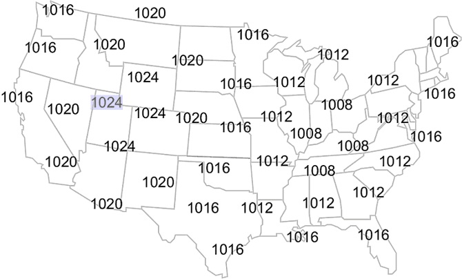
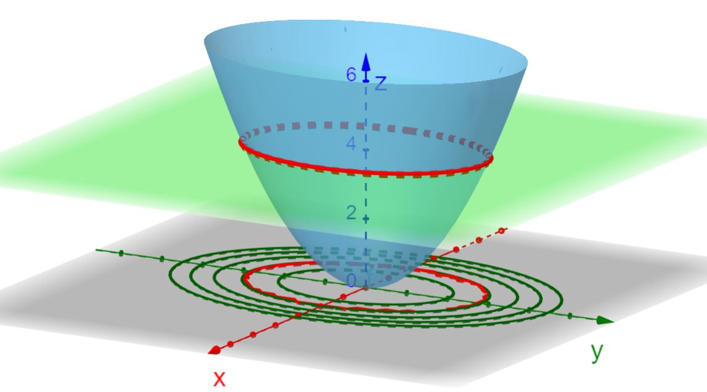
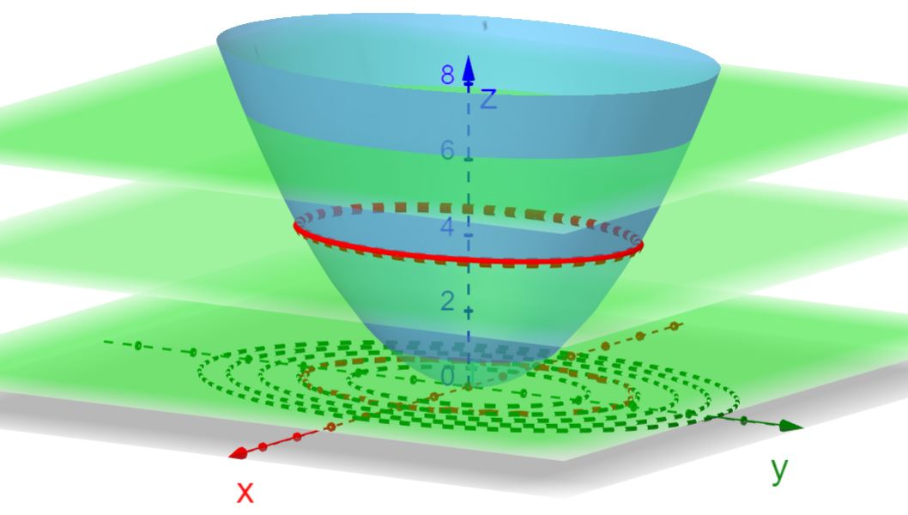
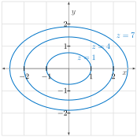
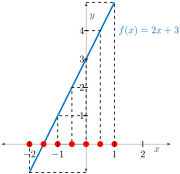
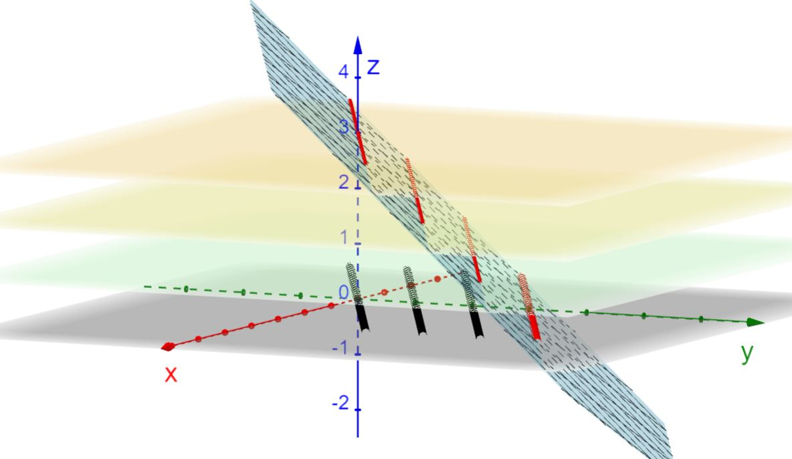
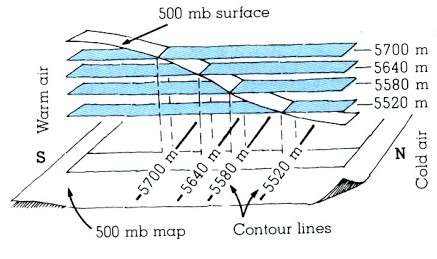
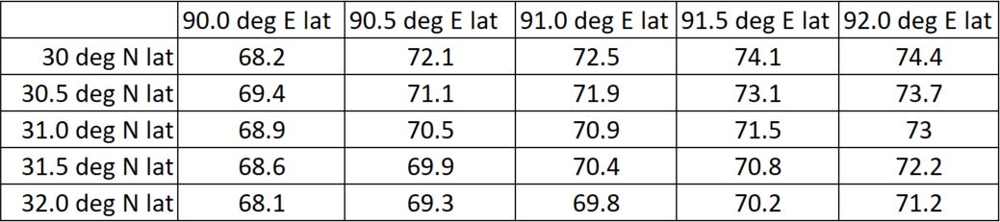
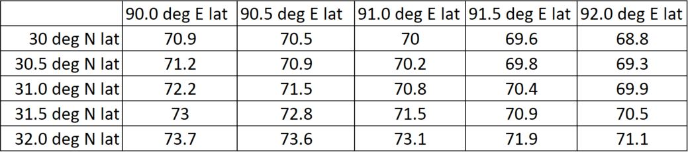

What is a contour diagram and how can it be used to understand functions of two variables?
What do isobars, isotherms, and isodrosotherms have in common and how are they related to various surfaces?
What is a level set? How can level sets be used to represent functions of several variables?
A surface representing the graph of \(f(x,y)\) often gives a good idea of behavior of function. However, it can be difficult to read at times. Contour maps (see Figure 3.1.5) are more often used. The curves on a topographical map that separate lower elevations from higher elevations are called contour lines because they outline the contour or shape of the land.
Because every point along the same contour has the same elevation, contour lines are also called level curves or level sets. We usually draw contours for equally spaced values of height \(z\text{.}\) In this way the more closely spaced the contours, the steeper the terrain.
Example3.3.2.Isobars.
Atmospheric pressure, a function of location, is measured in millibars. The map in Figure 3.3.3 shows the sea-level pressures for various locations.

Figure3.3.3.Atmospheric pressure as measured at several locations. (Source: weather.gov 47
weather.gov
)
In Figure 3.3.4, lines of equal values have been connected and labeled (using only the last two digits of the millibar measurement). These level curves for atmospheric pressure are called isobars. Isobars can be used to identify "Highs" and "Lows". These too have been labeled in Figure 3.3.4.
Draw temperature contours, also known as isotherms, on the map given in Figure 3.3.6 starting with \(40^{\circ}F\) and ending with \(80^{\circ}F\) with a contour interval of \(10^{\circ}F\text{.}\)
Contour diagrams and graphs are two geometric ways of representing a function of two variables. A contour diagram is formed by joining all the points at the same height on the surface and dropping the curve that is formed into the \(xy\)-plane (think of slicing the surface with equally spaced horizontal planes). In much the same way as shown in Figure 3.3.7, the graph of a function \(f(x,y)\) (a surface) is found by taking each contour and lifting it above the plane to a height of equal value.

Figure3.3.7.Contour lines are obtained from a surface by slicing it with horizontal planes.
Checkpoint3.3.8.Contours and Graphs.

Figure3.3.9.The graph of \(z = x^2 + 2y^2\) and the three planes \(z=1\text{,}\)\(z=4\text{,}\) and \(z=7\text{.}\)
The graph of \(z = f(x,y) = x^2 + 2y^2\) together with the planes \(z = 1\text{,}\)\(z=4\text{,}\) and \(z=7\) is shown in Figure 3.3.9. Find equations for the contours associated with these three planes.
Shown in Figure 3.3.10 is a contour plot of \(z = x^2 + y^2\text{.}\) Note that the circles in the plot are not equally spaced. What information does this give you about the function \(z = x^2 + y^2\text{?}\)

Figure3.3.10.A contour plot of \(z=x^2 + 2y^2\text{.}\)
Answer.
\(z=1\) gives \(x^2 + 2y^2 = 1\text{,}\) an ellipse centered at the origin \((0,0)\text{;}\)\(z=4\) gives \(x^2 + 2y^2 = 4\text{,}\) an ellipse; \(z=7\) gives an ellipse \(x^2 + 2y^2 = 7\text{.}\)
This indicates that the graph of \(z=x^2+2y^2\) gets steeper as we move away from the origin. In other words, close contours indicate the steepness of a graph.
Linear Functions in 3-Space.
In 2-space, a linear function is written in the form
\begin{gather*}
f(x)=ax+b.
\end{gather*}
The graph of \(f\) was a line and the level sets were equally-spaced points on the \(x\)-axis (see Figure 3.3.11). Differentiable functions of one variable have graphs that look like a line when we zoom in. That is, they are locally linear at \(x=x_0\) with slope \(f'(x_0)\text{.}\)

Figure3.3.11.A linear function in one variable has equally-spaced level sets consisting of points on the \(x\)-axis.
A linear function of two variables is one that can be written in the form
\begin{gather*}
f(x)=ax+by+c.
\end{gather*}
The graphs of linear functions in two variables are planes and their level sets are equally-spaced parallel lines in the \(xy\)-plane (see Figure 3.3.12). Differentiable functions of two-variables have graphs that look like a plane when we zoom in. They are locally linear at \((x,y)=(x_0,y_0)\) and, just like a plane, have two slopes - one in the \(x\)-direction and one in the \(y\)-direction.

Figure3.3.12.Planes are surfaces having equally-spaced, parallel contour lines.
Functions of Three Variables.
The graph of a function of one variable is a curve in 2-space. It has a one-dimensional level set (points on a line) as seen in Figure 3.3.11. The graph of a function of two variables is a surface in 3-space. It has a two-dimensional level set (curves in a plane) as seen in Figure 3.3.12. The graph of a function of three variables would be a solid in 4-space. It has a three-dimensional level set (surfaces in space). An example of a single level set (surface) for the function \(p(x,y,z)\) of three variables that gives the atmospheric pressure at location \((x,y,z)\) is shown in Figure 3.3.13.
A level surface (or level set) of a function of three variables, \(f(x,y,z)\text{,}\) is a surface of the form \(f(x,y,z) = c\text{,}\) where \(c\) is constant.
\(f(x,y,z)\)
(geometrically) As the family of level surfaces obtained by allowing \(c\) to vary.
(algebraically) As a formula \(w=f(x,y,z)\text{.}\)
(verbally) As a description of how the function behaves (e.g. is directly proportional to the distance from a point in space).
(numerically) As a 3D table of values.
Example3.3.15.Isobaric Maps.
One way to understand the atmospheric pressure function \(w=p(x,y,z)\) is through a series of 2D isobaric maps. Essentially, for a given pressure \(w\) (e.g. 500 mb), contours showing the \(z\) values at which \(w=p(x,y,z)\) are drawn.

Figure3.3.16.A series of 2D isobaric maps represents atmospheric pressure \(p(x,y,z)\text{.}\) (Source: Meteorology Today, by C.D. Ahrens)
Example3.3.17.Numerical Representation.
Imagine a three-dimensional grid space consisting of several planes at different heights. Each point is a point in the three-dimensional space (longitude \(x\text{,}\) latitude \(y\text{,}\) and altitude \(z\)), and the value for a specific point is that point’s value of a physical quantity (e.g. temperature \(T\)).
For example, an altitude of \(z=1\text{,}\) produces the table in Figure 3.3.19 for temperature \(T\text{.}\)

Figure3.3.19.Temperature \(T\) at various locations for which \(z=1\text{.}\)
At altitude \(z=2\text{,}\) we might have the table in Figure 3.3.20 for temperature \(T\text{.}\)

Figure3.3.20.Temperature \(T\) at various locations for which \(z=2\text{.}\)
Elements in a database representing temperature \(T\) would be 4-tuples:(30.0,90,1,68.2), (30.0,90.5,1,72.1), (30.0, 91.0, 1, 72.5), ... (30.0,90,2,70.9), (30.0,90.5,2,70.5), ...
ExercisesExercises
1.Reading a Contour Plot.
2.Reading a Contour Plot II.
3.Slope of Contour Line.
4.Draw Contour Diagram: Linear Function.
5.Draw Contour Diagram.
6.Buck River.
7.Match the Contour to the Graph.
8.Contour Through a Point.
Find an equation for the contour of \(f(x, y) = 2 x^2 y + 9 x + 20\) that goes through the point \((3, -3)\text{.}\)
\begin{equation*}
2 x^2 y + 9 x + 20 = -7.
\end{equation*}
9.Intersecting Contours?
Can two contour lines intersect? If so, when? If not, why not?
Answer.
No. Contour lines represent output of a function. Functions can only have one output for any given input.
10.Windchill Contours.
The wind chill tells you how cold it feels as a function of the air temperature and wind speed. Figure 3.3.21 is a contour diagram of wind chill \((^{\circ}F)\text{.}\)
If the wind speed is 15 mph, what temperature feels like \(-20^{\circ}F\text{?}\)
Estimate the wind chill if the temperature is \(0^{\circ}F\) and the wind speed is 10 mph.
Humans are at extreme risk when the wind chill is below \(-50^{\circ}F\text{.}\) If the temperature is \(-20^{\circ}F\text{,}\) estimate the wind speed at which extreme risk begins.
If the wind speed is 15 mph and the temperature drops by \(20^{\circ}F\text{,}\) approximately how much colder do you feel?
Answer.
\(\displaystyle 0^{\circ}F\)
approximately \(-17^{\circ}F\)
approximately 20 mph
approximately \(23^{\circ}\) colder
11.Level Sets in 1, 2, 3 Variables.
Compare and contrast the level sets for the following functions.
linear functions of one variable (e.g. \(f(x) = ax+b\))
linear functions of two variables (e.g. \(f(x,y) = ax +by + c\))
linear functions of three variables (e.g. \(f(x,y,z) = ax + by + cz + d\))
Answer.
The level sets of a linear function of one variable are equally spaced points on the \(x\)-axis (i.e. in the domain space). See also Figure 3.3.11.
The level sets of a linear function in two variables are parallel, equally spaced lines. See also Figure 3.3.12.
The level sets of a linear function in three variables are parallel, equally spaced planes in space.